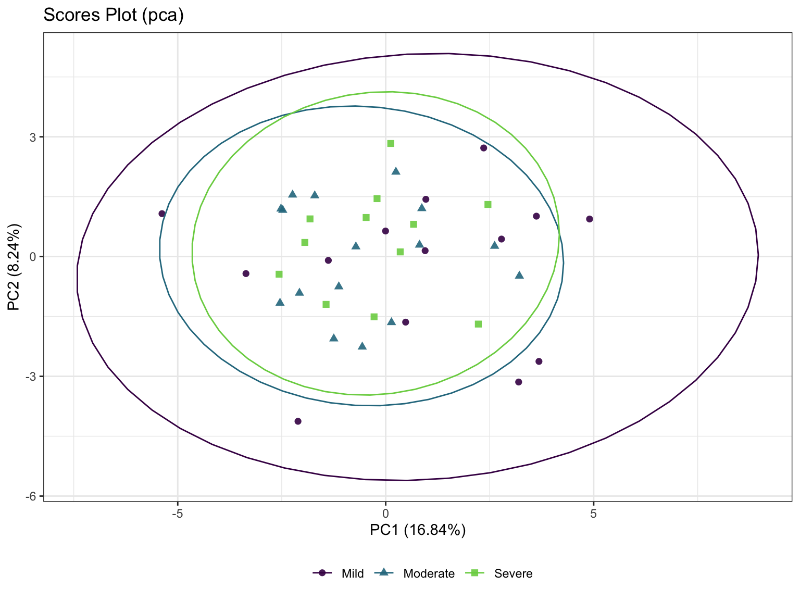

Chapter 5 Univariate Analysis
Univariate analysis uses traditional statistical methods on single variable to calculate the statistics, such as fold change, p-value, etc.
5.1 Loading packages
knitr::opts_chunk$set(warning = F)
library(dplyr)
library(tibble)
library(POMA)
library(ggplot2)
library(ggraph)
library(plotly)
library(SummarizedExperiment)
# rm(list = ls())
options(stringsAsFactors = F)
options(future.globals.maxSize = 1000 * 1024^2)5.2 Importing data
The input data sets are from the previous chapter.
se_impute <- readRDS("./dataset/POMA/se_impute.RDS")
se_normalize <- readRDS("./dataset/POMA/se_normalize.RDS")
se_processed <- readRDS("./dataset/POMA/se_processed.RDS")5.3 Fold Change Analysis
FoldChange <- function(object,
group_names,
fc_cutoff = 2,
cmp_type = 0,
paired = FALSE) {
features_tab <- SummarizedExperiment::assay(object)
metadata_tab <- SummarizedExperiment::colData(object)
metadata <- metadata_tab %>%
data.frame() %>%
dplyr::filter(group %in% group_names)
profile <- features_tab[, pmatch(rownames(metadata), colnames(features_tab))]
# make sure threshold is above 1
fc_cutoff <- ifelse(fc_cutoff > 1, fc_cutoff, 1/fc_cutoff)
max_cutoff <- fc_cutoff
min_cutoff <- 1 / fc_cutoff
GetFC <- function(x,
y,
cmpType,
paired = FALSE) {
# x = profile
# y = metadata
# cmpType = cmp_type
# paired = paired
x <- t(x)
colNames <- colnames(x)
rowNames <- rownames(x)
if (paired) {
# compute the average of paired FC (unit is pair)
G1 <- x[which(y$group == group_names[1]), ]
G2 <- x[which(y$group == group_names[2]), ]
if (cmpType == 0) {
fc.mat <- G1 - G2
} else {
fc.mat <- G2 - G1
}
fc.log <- apply(fc.mat, 2, mean)
fc.all <- signif(2^fc.log, 5)
} else {
m1 <- colMeans(x[which(y$group == group_names[1]), ])
m2 <- colMeans(x[which(y$group == group_names[2]), ])
# create a named matrix of sig vars for display
if (cmpType == 0) {
ratio <- m1/m2
} else {
ratio <- m2/m1
}
fc.all <- signif(ratio, 5)
ratio[ratio < 0] <- 0
fc.log <- signif(log2(ratio), 5)
fc.log[is.infinite(fc.log) & fc.log < 0] <- -99
fc.log[is.infinite(fc.log) & fc.log > 0] <- 99
}
names(fc.all) <- names(fc.log) <- colnames(x)
res <- list(fc.all = fc.all, fc.log = fc.log)
return(res)
}
res <- GetFC(profile, metadata, cmp_type, paired)
fc.all <- res$fc.all
fc.log <- res$fc.log
inx.up <- fc.all > max_cutoff
inx.down <- fc.all < min_cutoff
names(inx.up) <- names(inx.down) <- names(fc.all)
imp.inx <- inx.up | inx.down
sig.mat <- cbind(fc.all[imp.inx, drop = F], fc.log[imp.inx, drop = F])
colnames(sig.mat) <- c("Fold Change", "log2(FC)")
# order by absolute log value (since symmetrical in pos and neg)
inx.ord <- order(abs(sig.mat[, 2]), decreasing = T)
sig.mat <- sig.mat[inx.ord, , drop = F]
return(sig.mat)
}
FC_res <- FoldChange(
object = se_normalize,
fc_cutoff = 2,
group_names = c("Mild", "Moderate"),
cmp_type = 0,
paired = FALSE)
head(FC_res)## Fold Change log2(FC)
## M_52603 -0.43650 -99
## M_39270 -0.28201 -99
## M_35186 -1.17830 -99
## M_34214 -1.03940 -99
## M_49617 -4.72130 -99
## M_53189 -0.97524 -995.4 T Test
group_names <- c("Mild", "Severe")
se_processed_subset <- se_processed[, se_processed$group %in% group_names]
se_processed_subset$group <- factor(as.character(se_processed_subset$group))
ttest_res <- PomaUnivariate(se_processed_subset, method = "ttest")
head(ttest_res)## # A tibble: 6 9
## feature FC diff_means pvalue pvalueAdj mean_Mild mean_Severe sd_Mild sd_Severe
## <chr> <dbl> <dbl> <dbl> <dbl> <dbl> <dbl> <dbl> <dbl>
## 1 M_52603 3.93 0.069 0.604 0.745 0.0236 0.0926 0.238 0.360
## 2 M_19130 2.94 0.015 0.854 0.891 0.00797 0.0234 0.269 0.130
## 3 M_39270 -0.297 0.023 0.880 0.898 -0.0177 0.00526 0.460 0.272
## 4 M_35186 -0.656 0.086 0.510 0.745 -0.0518 0.0340 0.328 0.294
## 5 M_34214 -0.232 0.144 0.329 0.636 -0.117 0.0271 0.466 0.229
## 6 M_49617 0.064 -0.128 0.218 0.636 0.137 0.00881 0.249 0.2405.5 Wilcoxon Test
wilcox_res <- PomaUnivariate(se_processed_subset, method = "mann")
head(wilcox_res)## # A tibble: 6 9
## feature FC diff_means pvalue pvalueAdj mean_Mild mean_Severe sd_Mild sd_Severe
## <chr> <dbl> <dbl> <dbl> <dbl> <dbl> <dbl> <dbl> <dbl>
## 1 M_52603 3.93 0.069 0.709 0.830 0.0236 0.0926 0.238 0.360
## 2 M_19130 2.94 0.015 0.931 0.951 0.00797 0.0234 0.269 0.130
## 3 M_39270 -0.297 0.023 0.752 0.840 -0.0177 0.00526 0.460 0.272
## 4 M_35186 -0.656 0.086 0.546 0.748 -0.0518 0.0340 0.328 0.294
## 5 M_34214 -0.232 0.144 0.472 0.730 -0.117 0.0271 0.466 0.229
## 6 M_49617 0.064 -0.128 0.138 0.600 0.137 0.00881 0.249 0.2405.6 Limma Test
Limma_res <- PomaLimma(se_processed_subset, contrast = paste(group_names, collapse = "-"), adjust = "fdr")
head(Limma_res)## # A tibble: 6 7
## feature logFC AveExpr t P.Value adj.P.Val B
## <chr> <dbl> <dbl> <dbl> <dbl> <dbl> <dbl>
## 1 M_52464 -0.419 -0.0672 -2.94 0.00584 0.278 -2.26
## 2 M_52447 -0.369 -0.0657 -2.67 0.0116 0.278 -2.77
## 3 M_55041 -0.320 -0.0764 -2.23 0.0326 0.505 -3.52
## 4 M_35631 -0.269 -0.0382 -2.05 0.0477 0.505 -3.79
## 5 M_57663 -0.261 0.0104 -2.01 0.0526 0.505 -3.86
## 6 M_54885 -0.265 0.00557 -1.77 0.0853 0.655 -4.205.7 Volcano plot
se_impute_subset <- se_impute[, se_impute$group %in% group_names]
se_impute_subset$group <- factor(as.character(se_impute_subset$group))
PomaVolcano(se_impute_subset,
pval = "raw",
pval_cutoff = 0.1,
log2FC = 0.2,
xlim = 1,
labels = TRUE,
plot_title = TRUE)
5.8 Correlation Heatmaps
poma_cor <- PomaCorr(se_processed_subset, label_size = 8, coeff = 0.6)
poma_cor$correlations## # A tibble: 1,128 5
## feature1 feature2 R pvalue FDR
## <chr> <chr> <dbl> <dbl> <dbl>
## 1 M_52464 M_52447 0.933 3.15e-11 0.0000000356
## 2 M_55041 M_52464 0.911 6.07e-10 0.000000252
## 3 M_33955 M_33961 0.910 6.71e-10 0.000000252
## 4 M_55041 M_52447 0.905 1.20e- 9 0.000000337
## 5 M_33961 M_42398 0.901 2.04e- 9 0.000000460
## 6 M_33955 M_42398 0.898 2.72e- 9 0.000000511
## 7 M_52461 M_52438 0.887 7.73e- 9 0.00000116
## 8 M_33955 M_35253 0.886 8.19e- 9 0.00000116
## 9 M_33230 M_47118 0.884 9.95e- 9 0.00000125
## 10 M_33961 M_35253 0.881 1.28e- 8 0.00000144
## # with 1,118 more rows- correlation plot
poma_cor$corrplot- Network
poma_cor$graph
5.9 glasso: this function will compute a Gaussian Graphical Model using the glmnet package
PomaCorr(se_processed_subset, corr_type = "glasso", coeff = 0.6)$graph
5.10 Systematic Information
devtools::session_info()## Session info
## setting value
## version R version 4.1.2 (2021-11-01)
## os macOS Monterey 12.2.1
## system x86_64, darwin17.0
## ui RStudio
## language (EN)
## collate en_US.UTF-8
## ctype en_US.UTF-8
## tz Asia/Shanghai
## date 2022-08-04
## rstudio 2022.07.1+554 Spotted Wakerobin (desktop)
## pandoc 2.18 @ /Applications/RStudio.app/Contents/MacOS/quarto/bin/tools/ (via rmarkdown)
##
## Packages
## package * version date (UTC) lib source
## abind 1.4-5 2016-07-21 [1] CRAN (R 4.1.0)
## ade4 1.7-18 2021-09-16 [1] CRAN (R 4.1.0)
## annotate 1.72.0 2021-10-26 [1] Bioconductor
## AnnotationDbi 1.56.2 2021-11-09 [1] Bioconductor
## ape 5.6-2 2022-03-02 [1] CRAN (R 4.1.2)
## assertthat 0.2.1 2019-03-21 [1] CRAN (R 4.1.0)
## backports 1.4.1 2021-12-13 [1] CRAN (R 4.1.0)
## base64enc 0.1-3 2015-07-28 [1] CRAN (R 4.1.0)
## Biobase * 2.54.0 2021-10-26 [1] Bioconductor
## BiocGenerics * 0.40.0 2021-10-26 [1] Bioconductor
## BiocParallel 1.28.3 2021-12-09 [1] Bioconductor
## biomformat 1.22.0 2021-10-26 [1] Bioconductor
## Biostrings 2.62.0 2021-10-26 [1] Bioconductor
## bit 4.0.4 2020-08-04 [1] CRAN (R 4.1.0)
## bit64 4.0.5 2020-08-30 [1] CRAN (R 4.1.0)
## bitops 1.0-7 2021-04-24 [1] CRAN (R 4.1.0)
## blob 1.2.2 2021-07-23 [1] CRAN (R 4.1.0)
## bookdown 0.24 2021-09-02 [1] CRAN (R 4.1.0)
## brio 1.1.3 2021-11-30 [1] CRAN (R 4.1.0)
## broom 0.7.12 2022-01-28 [1] CRAN (R 4.1.2)
## bslib 0.3.1 2021-10-06 [1] CRAN (R 4.1.0)
## cachem 1.0.6 2021-08-19 [1] CRAN (R 4.1.0)
## Cairo 1.5-14 2021-12-21 [1] CRAN (R 4.1.2)
## callr 3.7.0 2021-04-20 [1] CRAN (R 4.1.0)
## car 3.0-12 2021-11-06 [1] CRAN (R 4.1.0)
## carData 3.0-5 2022-01-06 [1] CRAN (R 4.1.2)
## caret 6.0-92 2022-04-19 [1] CRAN (R 4.1.2)
## caTools 1.18.2 2021-03-28 [1] CRAN (R 4.1.0)
## cccd 1.6 2022-04-08 [1] CRAN (R 4.1.2)
## cellranger 1.1.0 2016-07-27 [1] CRAN (R 4.1.0)
## checkmate 2.0.0 2020-02-06 [1] CRAN (R 4.1.0)
## circlize 0.4.14 2022-02-11 [1] CRAN (R 4.1.2)
## class 7.3-20 2022-01-13 [1] CRAN (R 4.1.2)
## cli 3.3.0 2022-04-25 [1] CRAN (R 4.1.2)
## clue 0.3-60 2021-10-11 [1] CRAN (R 4.1.0)
## cluster * 2.1.2 2021-04-17 [1] CRAN (R 4.1.2)
## codetools 0.2-18 2020-11-04 [1] CRAN (R 4.1.2)
## coin 1.4-2 2021-10-08 [1] CRAN (R 4.1.0)
## colorspace 2.0-3 2022-02-21 [1] CRAN (R 4.1.2)
## ComplexHeatmap 2.10.0 2021-10-26 [1] Bioconductor
## conflicted 1.1.0 2021-11-26 [1] CRAN (R 4.1.0)
## corpcor 1.6.10 2021-09-16 [1] CRAN (R 4.1.0)
## cowplot 1.1.1 2020-12-30 [1] CRAN (R 4.1.0)
## crayon 1.5.0 2022-02-14 [1] CRAN (R 4.1.2)
## crmn 0.0.21 2020-02-10 [1] CRAN (R 4.1.0)
## curl 4.3.2 2021-06-23 [1] CRAN (R 4.1.0)
## data.table 1.14.2 2021-09-27 [1] CRAN (R 4.1.0)
## DBI 1.1.2 2021-12-20 [1] CRAN (R 4.1.0)
## DelayedArray 0.20.0 2021-10-26 [1] Bioconductor
## deldir 1.0-6 2021-10-23 [1] CRAN (R 4.1.0)
## dendextend * 1.15.2 2021-10-28 [1] CRAN (R 4.1.0)
## desc 1.4.1 2022-03-06 [1] CRAN (R 4.1.2)
## DESeq2 1.34.0 2021-10-26 [1] Bioconductor
## devtools 2.4.3 2021-11-30 [1] CRAN (R 4.1.0)
## digest 0.6.29 2021-12-01 [1] CRAN (R 4.1.0)
## doParallel 1.0.17 2022-02-07 [1] CRAN (R 4.1.2)
## doSNOW 1.0.20 2022-02-04 [1] CRAN (R 4.1.2)
## dplyr * 1.0.8 2022-02-08 [1] CRAN (R 4.1.2)
## dynamicTreeCut * 1.63-1 2016-03-11 [1] CRAN (R 4.1.0)
## e1071 1.7-9 2021-09-16 [1] CRAN (R 4.1.0)
## edgeR 3.36.0 2021-10-26 [1] Bioconductor
## ellipse 0.4.2 2020-05-27 [1] CRAN (R 4.1.0)
## ellipsis 0.3.2 2021-04-29 [1] CRAN (R 4.1.0)
## evaluate 0.15 2022-02-18 [1] CRAN (R 4.1.2)
## factoextra * 1.0.7 2020-04-01 [1] CRAN (R 4.1.0)
## fansi 1.0.2 2022-01-14 [1] CRAN (R 4.1.2)
## farver 2.1.0 2021-02-28 [1] CRAN (R 4.1.0)
## fastcluster * 1.2.3 2021-05-24 [1] CRAN (R 4.1.0)
## fastmap 1.1.0 2021-01-25 [1] CRAN (R 4.1.0)
## fastmatch 1.1-3 2021-07-23 [1] CRAN (R 4.1.0)
## fdrtool 1.2.17 2021-11-13 [1] CRAN (R 4.1.0)
## fgsea 1.20.0 2021-10-26 [1] Bioconductor
## filematrix 1.3 2018-02-27 [1] CRAN (R 4.1.0)
## FNN 1.1.3 2019-02-15 [1] CRAN (R 4.1.0)
## foreach 1.5.2 2022-02-02 [1] CRAN (R 4.1.2)
## foreign 0.8-82 2022-01-13 [1] CRAN (R 4.1.2)
## Formula 1.2-4 2020-10-16 [1] CRAN (R 4.1.0)
## fs 1.5.2 2021-12-08 [1] CRAN (R 4.1.0)
## future 1.24.0 2022-02-19 [1] CRAN (R 4.1.2)
## future.apply 1.8.1 2021-08-10 [1] CRAN (R 4.1.0)
## genefilter 1.76.0 2021-10-26 [1] Bioconductor
## geneplotter 1.72.0 2021-10-26 [1] Bioconductor
## generics 0.1.2 2022-01-31 [1] CRAN (R 4.1.2)
## GenomeInfoDb * 1.30.1 2022-01-30 [1] Bioconductor
## GenomeInfoDbData 1.2.7 2022-03-09 [1] Bioconductor
## GenomicRanges * 1.46.1 2021-11-18 [1] Bioconductor
## GetoptLong 1.0.5 2020-12-15 [1] CRAN (R 4.1.0)
## ggforce 0.3.3 2021-03-05 [1] CRAN (R 4.1.0)
## ggplot2 * 3.3.5 2021-06-25 [1] CRAN (R 4.1.0)
## ggpubr 0.4.0 2020-06-27 [1] CRAN (R 4.1.0)
## ggraph * 2.0.5 2021-02-23 [1] CRAN (R 4.1.0)
## ggrepel 0.9.1 2021-01-15 [1] CRAN (R 4.1.0)
## ggsignif 0.6.3 2021-09-09 [1] CRAN (R 4.1.0)
## glasso 1.11 2019-10-01 [1] CRAN (R 4.1.0)
## glmnet * 4.1-3 2021-11-02 [1] CRAN (R 4.1.0)
## GlobalOptions 0.1.2 2020-06-10 [1] CRAN (R 4.1.0)
## globals 0.14.0 2020-11-22 [1] CRAN (R 4.1.0)
## globaltest 5.48.0 2021-10-26 [1] Bioconductor
## glue 1.6.2 2022-02-24 [1] CRAN (R 4.1.2)
## gmp 0.6-5 2022-03-17 [1] CRAN (R 4.1.2)
## GO.db 3.14.0 2022-04-11 [1] Bioconductor
## gower 1.0.0 2022-02-03 [1] CRAN (R 4.1.2)
## gplots 3.1.1 2020-11-28 [1] CRAN (R 4.1.0)
## graphlayouts 0.8.0 2022-01-03 [1] CRAN (R 4.1.2)
## gridExtra 2.3 2017-09-09 [1] CRAN (R 4.1.0)
## gtable 0.3.0 2019-03-25 [1] CRAN (R 4.1.0)
## gtools 3.9.2 2021-06-06 [1] CRAN (R 4.1.0)
## hardhat 0.2.0 2022-01-24 [1] CRAN (R 4.1.2)
## highr 0.9 2021-04-16 [1] CRAN (R 4.1.0)
## Hmisc 4.6-0 2021-10-07 [1] CRAN (R 4.1.0)
## htmlTable 2.4.0 2022-01-04 [1] CRAN (R 4.1.2)
## htmltools 0.5.2 2021-08-25 [1] CRAN (R 4.1.0)
## htmlwidgets 1.5.4 2021-09-08 [1] CRAN (R 4.1.0)
## httr * 1.4.2 2020-07-20 [1] CRAN (R 4.1.0)
## huge 1.3.5 2021-06-30 [1] CRAN (R 4.1.0)
## igraph * 1.2.11 2022-01-04 [1] CRAN (R 4.1.2)
## impute 1.68.0 2021-10-26 [1] Bioconductor
## ipred 0.9-12 2021-09-15 [1] CRAN (R 4.1.0)
## IRanges * 2.28.0 2021-10-26 [1] Bioconductor
## irlba 2.3.5 2021-12-06 [1] CRAN (R 4.1.0)
## iterators 1.0.14 2022-02-05 [1] CRAN (R 4.1.2)
## jpeg 0.1-9 2021-07-24 [1] CRAN (R 4.1.0)
## jquerylib 0.1.4 2021-04-26 [1] CRAN (R 4.1.0)
## jsonlite 1.8.0 2022-02-22 [1] CRAN (R 4.1.2)
## KEGGREST 1.34.0 2021-10-26 [1] Bioconductor
## KernSmooth 2.23-20 2021-05-03 [1] CRAN (R 4.1.2)
## knitr 1.37 2021-12-16 [1] CRAN (R 4.1.0)
## labeling 0.4.2 2020-10-20 [1] CRAN (R 4.1.0)
## lattice 0.20-45 2021-09-22 [1] CRAN (R 4.1.2)
## latticeExtra 0.6-29 2019-12-19 [1] CRAN (R 4.1.0)
## lava 1.6.10 2021-09-02 [1] CRAN (R 4.1.0)
## lavaan 0.6-11 2022-03-31 [1] CRAN (R 4.1.2)
## lazyeval 0.2.2 2019-03-15 [1] CRAN (R 4.1.0)
## libcoin 1.0-9 2021-09-27 [1] CRAN (R 4.1.0)
## lifecycle 1.0.1 2021-09-24 [1] CRAN (R 4.1.0)
## limma 3.50.1 2022-02-17 [1] Bioconductor
## listenv 0.8.0 2019-12-05 [1] CRAN (R 4.1.0)
## locfit 1.5-9.5 2022-03-03 [1] CRAN (R 4.1.2)
## lubridate 1.8.0 2021-10-07 [1] CRAN (R 4.1.0)
## magrittr * 2.0.2 2022-01-26 [1] CRAN (R 4.1.2)
## MASS 7.3-55 2022-01-13 [1] CRAN (R 4.1.2)
## Matrix * 1.4-0 2021-12-08 [1] CRAN (R 4.1.0)
## MatrixGenerics * 1.6.0 2021-10-26 [1] Bioconductor
## matrixStats * 0.61.0 2021-09-17 [1] CRAN (R 4.1.0)
## memoise 2.0.1 2021-11-26 [1] CRAN (R 4.1.0)
## MetaboAnalystR * 3.2.0 2022-06-28 [1] Github (xia-lab/MetaboAnalystR@892a31b)
## metagenomeSeq 1.36.0 2021-10-26 [1] Bioconductor
## mgcv 1.8-39 2022-02-24 [1] CRAN (R 4.1.2)
## mixedCCA 1.5.2 2022-07-14 [1] Github (irinagain/mixedCCA@c6d41a3)
## mixOmics 6.18.1 2021-11-18 [1] Bioconductor (R 4.1.2)
## mnormt 2.0.2 2020-09-01 [1] CRAN (R 4.1.0)
## ModelMetrics 1.2.2.2 2020-03-17 [1] CRAN (R 4.1.0)
## modeltools 0.2-23 2020-03-05 [1] CRAN (R 4.1.0)
## multcomp 1.4-18 2022-01-04 [1] CRAN (R 4.1.2)
## multtest 2.50.0 2021-10-26 [1] Bioconductor
## munsell 0.5.0 2018-06-12 [1] CRAN (R 4.1.0)
## mvtnorm 1.1-3 2021-10-08 [1] CRAN (R 4.1.0)
## NADA 1.6-1.1 2020-03-22 [1] CRAN (R 4.1.0)
## NetCoMi * 1.0.3 2022-07-14 [1] Github (stefpeschel/NetCoMi@d4d80d3)
## nlme 3.1-155 2022-01-13 [1] CRAN (R 4.1.2)
## nnet 7.3-17 2022-01-13 [1] CRAN (R 4.1.2)
## parallelly 1.31.0 2022-04-07 [1] CRAN (R 4.1.2)
## pbapply 1.5-0 2021-09-16 [1] CRAN (R 4.1.0)
## pbivnorm 0.6.0 2015-01-23 [1] CRAN (R 4.1.0)
## pcaMethods 1.86.0 2021-10-26 [1] Bioconductor
## pcaPP 1.9-74 2021-04-23 [1] CRAN (R 4.1.0)
## permute 0.9-7 2022-01-27 [1] CRAN (R 4.1.2)
## pheatmap 1.0.12 2019-01-04 [1] CRAN (R 4.1.0)
## phyloseq 1.38.0 2021-10-26 [1] Bioconductor
## pillar 1.7.0 2022-02-01 [1] CRAN (R 4.1.2)
## pkgbuild 1.3.1 2021-12-20 [1] CRAN (R 4.1.0)
## pkgconfig 2.0.3 2019-09-22 [1] CRAN (R 4.1.0)
## pkgload 1.2.4 2021-11-30 [1] CRAN (R 4.1.0)
## plotly * 4.10.0 2021-10-09 [1] CRAN (R 4.1.0)
## plyr 1.8.6 2020-03-03 [1] CRAN (R 4.1.0)
## png 0.1-7 2013-12-03 [1] CRAN (R 4.1.0)
## polyclip 1.10-0 2019-03-14 [1] CRAN (R 4.1.0)
## POMA * 1.7.2 2022-07-26 [1] Github (pcastellanoescuder/POMA@bc8a972)
## preprocessCore 1.56.0 2021-10-26 [1] Bioconductor
## prettyunits 1.1.1 2020-01-24 [1] CRAN (R 4.1.0)
## pROC 1.18.0 2021-09-03 [1] CRAN (R 4.1.0)
## processx 3.5.2 2021-04-30 [1] CRAN (R 4.1.0)
## prodlim 2019.11.13 2019-11-17 [1] CRAN (R 4.1.0)
## proxy 0.4-26 2021-06-07 [1] CRAN (R 4.1.0)
## ps 1.6.0 2021-02-28 [1] CRAN (R 4.1.0)
## psych 2.2.5 2022-05-10 [1] CRAN (R 4.1.2)
## pulsar 0.3.7 2020-08-07 [1] CRAN (R 4.1.0)
## purrr 0.3.4 2020-04-17 [1] CRAN (R 4.1.0)
## qgraph 1.9.2 2022-03-04 [1] CRAN (R 4.1.2)
## qs 0.25.3 2022-02-22 [1] CRAN (R 4.1.2)
## R6 2.5.1 2021-08-19 [1] CRAN (R 4.1.0)
## ragg 1.2.2 2022-02-21 [1] CRAN (R 4.1.2)
## randomForest 4.7-1 2022-02-03 [1] CRAN (R 4.1.2)
## RankProd 3.20.0 2021-10-26 [1] Bioconductor
## RApiSerialize 0.1.0 2014-04-19 [1] CRAN (R 4.1.0)
## rARPACK 0.11-0 2016-03-10 [1] CRAN (R 4.1.0)
## rbibutils 2.2.7 2021-12-07 [1] CRAN (R 4.1.0)
## RColorBrewer 1.1-2 2014-12-07 [1] CRAN (R 4.1.0)
## Rcpp 1.0.8.2 2022-03-11 [1] CRAN (R 4.1.2)
## RcppParallel 5.1.5 2022-01-05 [1] CRAN (R 4.1.2)
## RCurl 1.98-1.6 2022-02-08 [1] CRAN (R 4.1.2)
## Rdpack 2.2 2022-03-19 [1] CRAN (R 4.1.2)
## readxl * 1.4.0 2022-03-28 [1] CRAN (R 4.1.2)
## recipes 0.2.0 2022-02-18 [1] CRAN (R 4.1.2)
## remotes 2.4.2 2021-11-30 [1] CRAN (R 4.1.0)
## reshape2 1.4.4 2020-04-09 [1] CRAN (R 4.1.0)
## rhdf5 2.38.1 2022-03-10 [1] Bioconductor
## rhdf5filters 1.6.0 2021-10-26 [1] Bioconductor
## Rhdf5lib 1.16.0 2021-10-26 [1] Bioconductor
## rjson 0.2.21 2022-01-09 [1] CRAN (R 4.1.2)
## rlang 1.0.2 2022-03-04 [1] CRAN (R 4.1.2)
## rmarkdown 2.13 2022-03-10 [1] CRAN (R 4.1.2)
## Rmpfr 0.8-9 2022-06-03 [1] CRAN (R 4.1.2)
## rootSolve 1.8.2.3 2021-09-29 [1] CRAN (R 4.1.0)
## rpart 4.1.16 2022-01-24 [1] CRAN (R 4.1.2)
## rprojroot 2.0.2 2020-11-15 [1] CRAN (R 4.1.0)
## Rserve * 1.8-10 2021-11-25 [1] CRAN (R 4.1.0)
## RSpectra 0.16-0 2019-12-01 [1] CRAN (R 4.1.0)
## RSQLite 2.2.10 2022-02-17 [1] CRAN (R 4.1.2)
## rstatix 0.7.0 2021-02-13 [1] CRAN (R 4.1.0)
## rstudioapi 0.13 2020-11-12 [1] CRAN (R 4.1.0)
## S4Vectors * 0.32.3 2021-11-21 [1] Bioconductor
## sandwich 3.0-1 2021-05-18 [1] CRAN (R 4.1.0)
## sass 0.4.0 2021-05-12 [1] CRAN (R 4.1.0)
## scales 1.1.1 2020-05-11 [1] CRAN (R 4.1.0)
## scrime 1.3.5 2018-12-01 [1] CRAN (R 4.1.0)
## sessioninfo 1.2.2 2021-12-06 [1] CRAN (R 4.1.0)
## shape 1.4.6 2021-05-19 [1] CRAN (R 4.1.0)
## siggenes 1.68.0 2021-10-26 [1] Bioconductor
## snow 0.4-4 2021-10-27 [1] CRAN (R 4.1.0)
## SpiecEasi * 1.1.2 2022-07-14 [1] Github (zdk123/SpiecEasi@c463727)
## SPRING * 1.0.4 2022-08-03 [1] Github (GraceYoon/SPRING@3d641a4)
## stringfish 0.15.5 2021-12-01 [1] CRAN (R 4.1.0)
## stringi 1.7.6 2021-11-29 [1] CRAN (R 4.1.0)
## stringr 1.4.0 2019-02-10 [1] CRAN (R 4.1.0)
## SummarizedExperiment * 1.24.0 2021-10-26 [1] Bioconductor
## survival 3.3-1 2022-03-03 [1] CRAN (R 4.1.2)
## systemfonts 1.0.4 2022-02-11 [1] CRAN (R 4.1.2)
## testthat 3.1.2 2022-01-20 [1] CRAN (R 4.1.2)
## textshaping 0.3.6 2021-10-13 [1] CRAN (R 4.1.0)
## TH.data 1.1-0 2021-09-27 [1] CRAN (R 4.1.0)
## tibble * 3.1.6 2021-11-07 [1] CRAN (R 4.1.0)
## tidygraph 1.2.1 2022-04-05 [1] CRAN (R 4.1.2)
## tidyr 1.2.0 2022-02-01 [1] CRAN (R 4.1.2)
## tidyselect 1.1.2 2022-02-21 [1] CRAN (R 4.1.2)
## timeDate 3043.102 2018-02-21 [1] CRAN (R 4.1.0)
## tmvnsim 1.0-2 2016-12-15 [1] CRAN (R 4.1.0)
## truncnorm 1.0-8 2018-02-27 [1] CRAN (R 4.1.0)
## tweenr 1.0.2 2021-03-23 [1] CRAN (R 4.1.0)
## usethis 2.1.5 2021-12-09 [1] CRAN (R 4.1.0)
## utf8 1.2.2 2021-07-24 [1] CRAN (R 4.1.0)
## vctrs 0.3.8 2021-04-29 [1] CRAN (R 4.1.0)
## vegan 2.5-7 2020-11-28 [1] CRAN (R 4.1.0)
## VGAM 1.1-6 2022-02-14 [1] CRAN (R 4.1.2)
## viridis 0.6.2 2021-10-13 [1] CRAN (R 4.1.0)
## viridisLite 0.4.0 2021-04-13 [1] CRAN (R 4.1.0)
## WGCNA * 1.71 2022-04-22 [1] CRAN (R 4.1.2)
## withr 2.5.0 2022-03-03 [1] CRAN (R 4.1.2)
## Wrench 1.12.0 2021-10-26 [1] Bioconductor
## xfun 0.30 2022-03-02 [1] CRAN (R 4.1.2)
## XMAS2 2.1.7.2 2022-07-29 [1] local
## XML 3.99-0.9 2022-02-24 [1] CRAN (R 4.1.2)
## xtable 1.8-4 2019-04-21 [1] CRAN (R 4.1.0)
## XVector 0.34.0 2021-10-26 [1] Bioconductor
## yaml 2.3.5 2022-02-21 [1] CRAN (R 4.1.2)
## zCompositions 1.4.0 2022-01-13 [1] CRAN (R 4.1.2)
## zlibbioc 1.40.0 2021-10-26 [1] Bioconductor
## zoo 1.8-9 2021-03-09 [1] CRAN (R 4.1.0)
##
## [1] /Library/Frameworks/R.framework/Versions/4.1/Resources/library
##
##